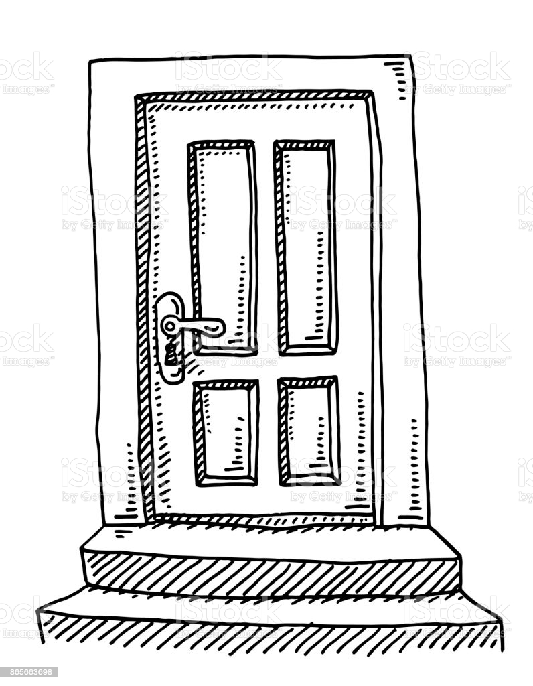
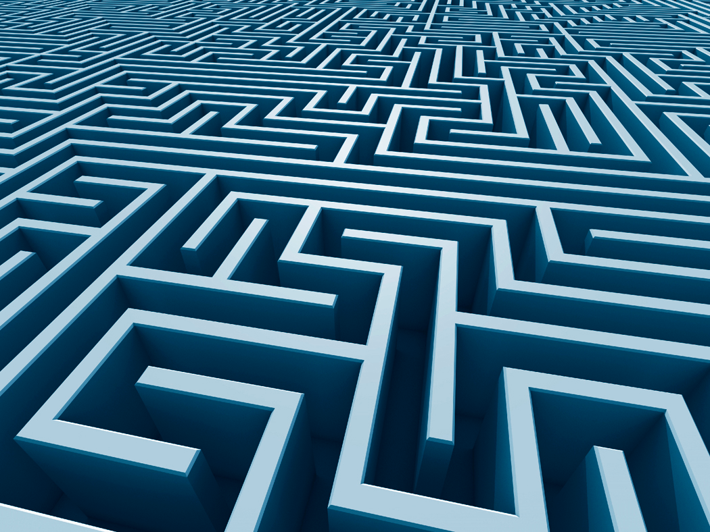
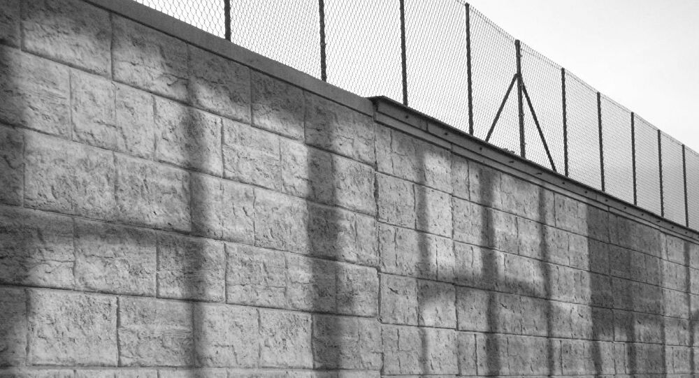

En esta sala Diana tendrá que completar un puzzle el cual consiste en adivinar un número del 1 al 10 en el que cada vez que falle aumentara el nivel del agua de la sala, tiene hasta un máximo de 7 intentos.
La segunda sala consiste en buscar la llave correcta para pasar a la siguiente sala, habría unas 20 llaves colgadas del techo, una de ellas es la correcta, debería comprobar una por una cual es la que abre la puerta, el problema, es que por cada llave incorrecta, en la sala empezaría a salir serpientes y escorpiones venenosos que intentarían matar a Diana.
La tercera sala consta de esquivar a animales que están por toda la sala dormidos, hay baldosas que suenan, hay que tratar de esquivarlas , al más mínimo ruido se despertará el animal que esté al lado y Diana tendrá que cruzar la sala con las mismas trampas sin despertar a ninguno más para salvarse.
En esta sala Diana tendrá que escoger una puerta las cuales hay varias en la sala, en cada puerta esconde diferentes criaturas las cuales atacaran a Diana por lo que tendrá que elegir la puerta correcta sacando la respuesta de un acertijo el cual está escrito en una pared, cada puerta poseerá un signo el cual el acertijo hace mención y será el correcto.
Diana ha pasado una puerta a la que ha salido a un campo desierto, en esta tendrá que sobrevivir a los sucesos de gente inmortal que aparece en la noche, hasta que consiga llegar a una casilla donde tendrá que superar más retos.
En esta sala Diana tendra que averiguar el camino correcto y encontrar la salida de un laberinto.
Diana ésta vez deberá subir a un helicóptero el que está en la azotea de la casa en el que deberá ayudar a liberar a un animal vigilado por personas, éstas no deben tocarle, al liberarlo pasa directamente a la siguiente sala.
En esta prueba Diana tendrá que recolectar una serie de objetos por toda la zona en la que se encuentra con ayuda de su mascota para poder alcanzar ciertos objetos. Una vez conseguidos ciertos objetos podrá fabricar una cuerda con gancho la cual utilizara para subir un muro el cual le impedía el paso hacia la siguiente zona.
